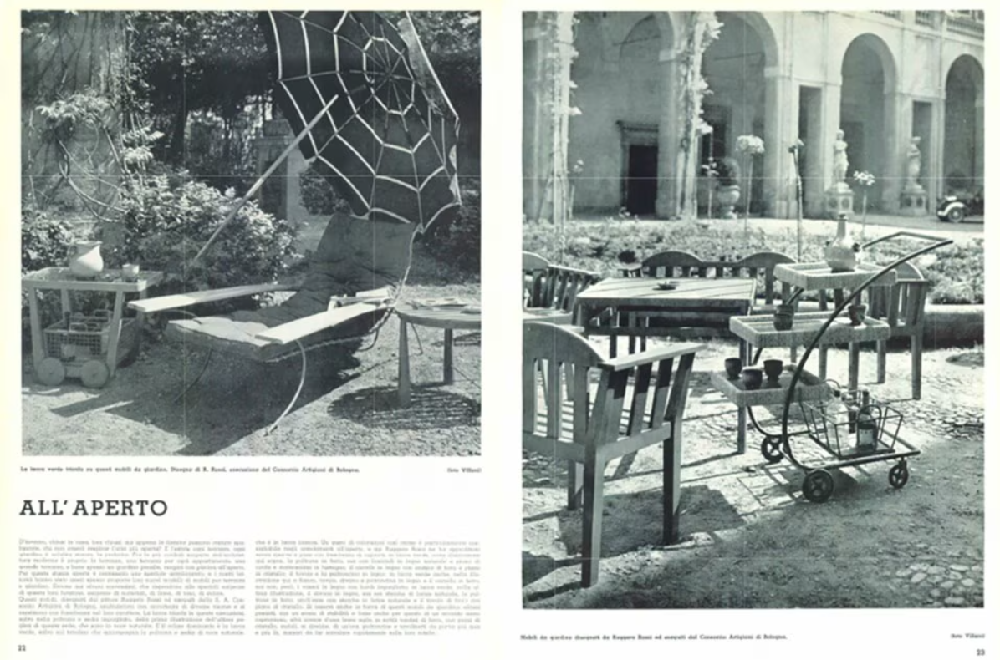
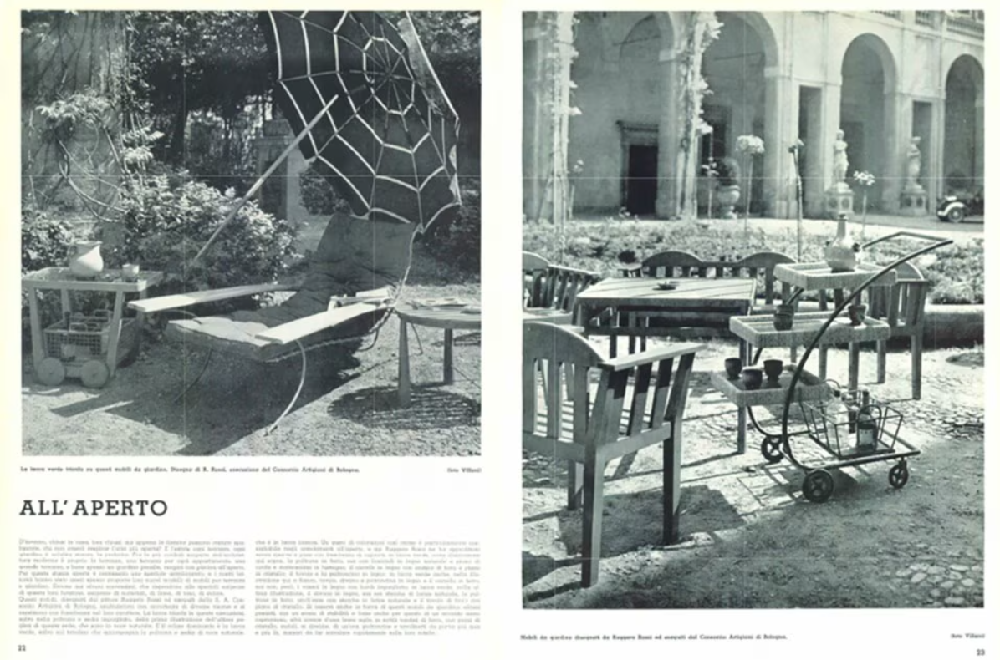
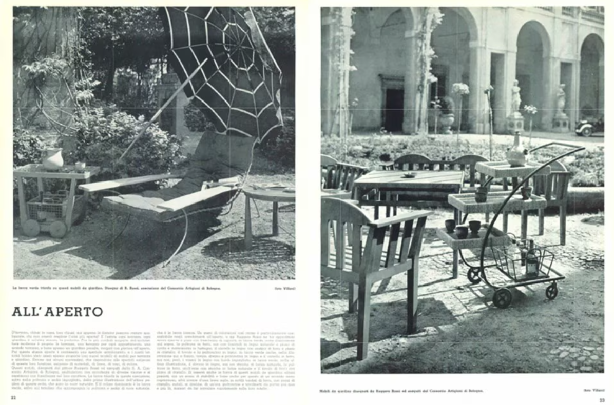

ARREDO OUTDOOR
DAL DONDOLO AL VIMINI AL TAPPETO VOLANTE: EVOLUZIONE DELL'ARREDO OUTDOOR
Giardini e terrazze sono “fra le più cordiali scoperte dell’architettura moderna”, e in quanto spazi da vivere, richiedono un arredamento speciale, facile da spostare, leggero e resistente. Alla fine degli anni Trenta, con una colorata sequenza di disegni a mano, Domus illustra una collezione di mobili in tondini di ferro: sedie, dondoli e divanetti con cuscini in tessuto, soluzioni moderne alternate a “recuperi che l’ultimo Ottocento mise di moda”. Come svecchiare i pezzi? Verniciandoli di bianco o di verde, i colori più in voga. (Domus 125, Maggio 1938)
GENICHIRO INOKUMA
Anche dall’estero arrivano proposte interessanti per l’outdoor, come quelle del pittore e designer giapponese Geniciro Inokuma, che nel 1955 progetta sedie sdraio in maglia metallica e cuoio, un’amaca in tessuto pneumatico e un tavolino da te in compensato (Domus 308, luglio 1955), mentre dalla Danimarca spiccano le eleganti soluzioni proposte da Mary Bloch, tavoli e sedie in bambù e le bellissime cabine mobili per ripararsi dal vento delle spiagge del Nord. La base è in vimini e le pareti in tela, mentre due finestrelle e una visiera frontale permettono di affacciarsi sul panorama. (Domus 373, dicembre 1960)
 

